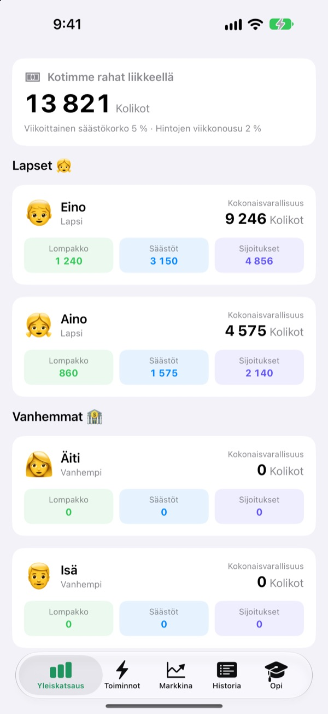
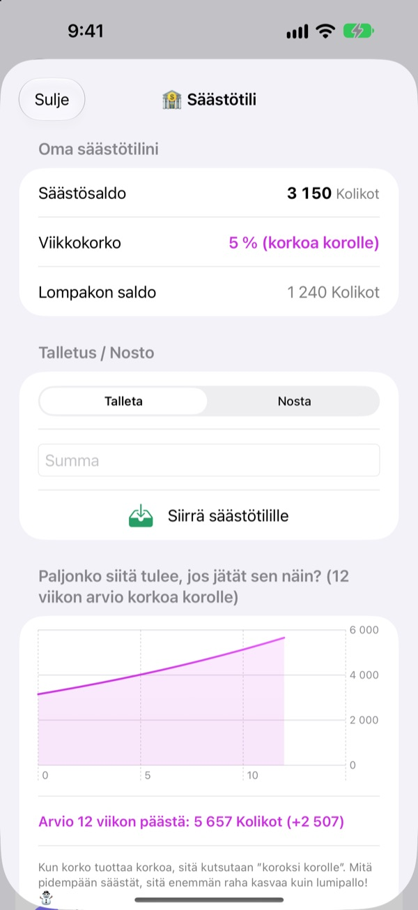
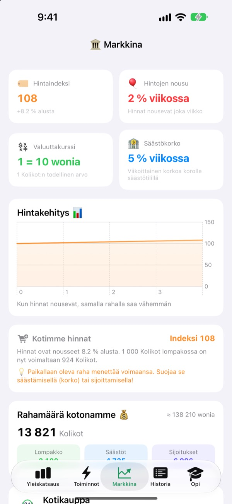
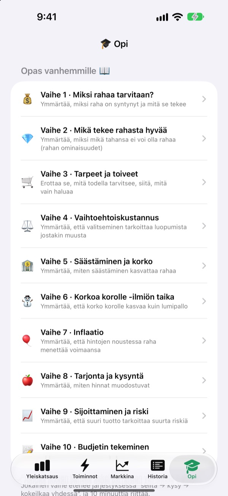

Viikkorahapäivästä
tulee rahatunti
Sinä olet perheen keskuspankki ja lapset ovat asiakkaita. He saavat viikkorahansa teidän omana valuuttananne, ostavat herkkuja, näkevät koron kertyvän säästöihin ja elävät mukana harjoitusrahaston nousuissa ja laskuissa.
Kaikki ominaisuudet ovat ilmaisia. Oikeaa rahaa ei liiku koskaan.

Mihin laittaisit 1 000 kolikkoa?
Samat 1 000 kolikkoa ovat lompakossa, säästötilillä ja kolmessa rahastossa. Siirry viikko kerrallaan eteenpäin ja katso, mitä kullekin tapahtuu. Säännöt ovat samat kuin sovelluksessa.
”Säästä, niin se kasvaa.” Meneekö se lapselle oikeasti perille?
Korko, korkoa korolle, inflaatio: mitä enemmän selittää, sitä kaukaisemmalta se kuulostaa. SukSuk Viikkorahassa lapset ansaitsevat, kuluttavat ja odottavat itse. Kun he huomaavat viime viikon säästöille kertyneen korkoa, seuraava viikkoraha menee suoraan säästötilille.
Kärsivällisyys näkyy
Säästötilillä olevalle rahalle kertyy joka viikko korkoa korolle. Sinä päätät koron, ja kaavio näyttää, paljonko summa on 12 viikon päästä, jos siihen ei kosketa.
Sovellus jäi muutamaksi päiväksi avaamatta? Avattaessa kaikki rästissä olevat viikot maksetaan kerralla.

Näe, miten hinnat syövät lompakkoa
Markkina-välilehti kokoaa perheen hintaindeksin, inflaation, koron, rahamäärän ja rahastojen hinnat yhdelle näytölle. Hintojen noustessa näkee, kuinka paljon vähemmän lompakon 1 000 kolikolla saa.
Lapset näkevät selvistä luvuista, että makaava raha kutistuu ja säästetty tai sijoitettu raha pitää arvonsa.

Kymmenen keskustelua yhdessä
Opas vanhemmille kulkee kymmenessä vaiheessa: miksi tarvitsemme rahaa, tarpeet ja halut, vaihtoehtoiskustannus, säästäminen ja korko, korkoa korolle, inflaatio, sijoittaminen ja riski sekä lopuksi oma budjetti.
Korkoa korolle -laskuri ja hintakokeilulaskuri antavat muuttaa lukuja ja katsoa, mitä tapahtuu.

Alkuun kolmessa vaiheessa
- 1
Nimeä valuutta
Pavut, Tähdet, Kolikot, ihan miksi perhe haluaa sitä kutsua.
- 2
Aseta vanhemman PIN
Neljä numeroa. Vain sen tietävä voi antaa viikkorahaa tai muuttaa pankin asetuksia.
- 3
Lisää perhe
Lisää lapset ja vanhemmat, anna ensimmäinen viikkoraha, ja homma käyntiin.
Mitä löytyy mistäkin
- Yleiskatsaus
- Kaikkien lompakot, säästöt ja sijoitukset yhdellä silmäyksellä
- Toiminnot
- Anna tai vähennä viikkorahaa, Tuotteen viivakoodi, Lisää tuote, Kutsu lapsi, Lapsen puhelimen tila, Pankin asetukset (vaatii vanhemman PIN-koodin)
- Markkina
- Hintaindeksi, inflaatio, valuuttakurssi, säästökorko, rahamäärä, rahastojen hinnat
- Historia
- Jokainen rahaliike päivän, jäsenen tai tyypin mukaan
- Opi
- Kymmenvaiheinen opas vanhemmille, korkoa korolle -laskuri, hintakokeilulaskuri
- 🐢 Kilpikonnan vakaa rahasto
- Pienet päivittäiset heilahdukset, hidas ja tasainen nousu
- 🐰 Jäniksen kasvuosake
- Ylös ja alas, mutta kasvaa
- 🚀 Raketin seikkailuosake
- Voi nousta taivaisiin tai syöksyä alas
Alussa säästökorko on 5 % ja inflaatio 2 % viikossa. Molempia voi muuttaa Vanhempaintilassa kohdassa Pankin asetukset. Kun inflaatio on 0 %, hinnat pysyvät ennallaan.
Kaikki ominaisuudet ilmaisia
Ilmainen
- Perheen oma valuutta ja PIN-koodilla lukittu Vanhempaintila
- Viikkorahan antaminen ja vähentäminen, Kotikauppa ja viivakoodimaksut
- Säästötili, jolle kertyy viikoittain korkoa korolle
- Kolme harjoitusrahastoa tuottokaavioineen
- Markkina-välilehti ja päivätty tapahtumahistoria
- Kymmenvaiheinen opas vanhemmille ja kaksi laskuria
- Lapsen puhelimen tila ja iCloud-synkronointi
Tue kehittäjää
- Lähetä haluamasi kokoinen tippi Vanhempaintilan kohdasta Pankin asetukset
- Tippi ei avaa mitään. Sovellus toimii täsmälleen samoin
Ei mainoksia, ei tilausta. Tippipainike on vain Vanhempaintilassa, joten lapset eivät koskaan näe ostopainiketta.
Kysymyksiä
Liikkuuko oikeaa rahaa?
Ei. Sovelluksen valuutta ja kaikki tapahtumat ovat leikkiä ja vain oppimista varten. Mikään ei ole yhteydessä oikeaan pankkitiliin, korttiin tai käteiseen.
Miten näemme samat tilit lapsen puhelimessa?
Samalla iCloud-tilillä kirjautuneet laitteet synkronoivat perheen tilit automaattisesti. Tarkista, että iCloud on päällä kohdassa Asetukset > Apple-tili > iCloud. Toiminnot-välilehden kohdassa Kutsu lapsi voit luoda QR-kutsun, jonka lapsi skannaa kameralla. Ilman iCloudia tiedot pysyvät vain siinä yhdessä laitteessa.
Mikä on Lapsen puhelimen tila?
Se tekee lapsen puhelimesta näkymän, joka on vain häntä varten. Lapsi näkee vain oman lompakkonsa, sijoituksensa, historiansa ja oppitunnit, ja tilasta poistuminen vaatii vanhemman PIN-koodin.
Unohdin vanhemman PIN-koodin.
PIN tallennetaan vain laitteeseen, joten edes kehittäjä ei voi palauttaa sitä. Kun poistat sovelluksen ja asennat sen uudelleen, voit tehdä käyttöönoton alusta, mutta samalla myös nykyiset tiedot poistuvat.
Miten säästökorko toimii?
Joka viikko säästöjen saldoon lisätään automaattisesti korkoa korolle. Koron asetat Vanhempaintilassa, ja kuluneet viikot tasataan, kun sovellus avataan seuraavan kerran.
Seuraavatko rahastojen hinnat oikeita markkinoita?
Eivät. Ne ovat harjoitusdataa, joka muuttuu sovelluksessa kerran päivässä. Mitä riskisempi rahasto, sitä suuremmat heilahdukset. Ne eivät ole oikeita rahoitustuotteita.
Miksi hinnat nousevat?
Jotta lapset tuntisivat inflaation, perheen hintaindeksi nousee hieman joka viikko. Tahtia voi muuttaa, tai sen voi asettaa 0 %:iin, Vanhempaintilan kohdassa Pankin asetukset. Kun nostat samalla vähän Kotikaupan herkkujen ja lelujen hintoja, oppi jää paremmin mieleen.
Miten poistan kaiken?
Sovelluksen poistaminen poistaa laitteeseen tallennetut tiedot. iCloudiin synkronoidut tiedot poistat kohdassa Asetukset > Apple-tili > iCloud > Hallitse tallennustilaa.
Lähetetäänkö perheeni tietoja jonnekin?
Ei. Rekisteröitymistä ei ole, ja kaikki tiedot pysyvät laitteessasi ja omalla iCloud-tililläsi. Kehittäjä saa vain palautteen, jonka itse lähetät Vanhempaintilasta, sekä nimettömiä käyttötilastoja ja kaatumisraportteja.
Millä laitteilla sovellus toimii?
iPhonella, jossa on iOS 17.0 tai uudempi.
Kysyttävää, virheitä tai ideoita? Kirjoita osoitteeseen leeo@kakao.com. Kun kerrot laitteesi mallin ja iOS-version, pystymme auttamaan nopeammin.